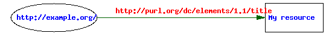
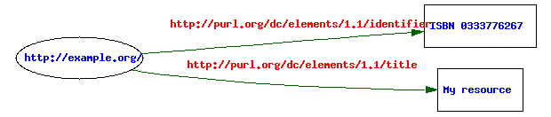
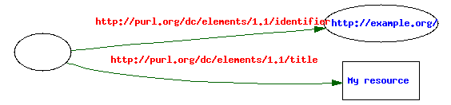
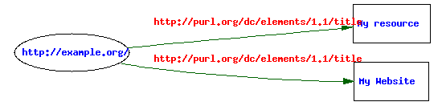

URI references and RDF
An RDF triple is made up of three components [RDFCAS]:
- the subject, which is either an RDF URI reference or a blank node
- the predicate, which is a an RDF URI reference
- the object, which is an RDF URI reference, a literal or a blank node
Each URI reference identifies a resource. A resource may be anything: a network-accessible object, a physical object, or an abstract concept. The URI references that occur as predicates in RDF triples always refer to conceptual resources known as properties, types of relationship between two things.
A blank node is just a unique node that can be used in one or more RDF statements, but has no intrinsic name.
The Dublin Core Identifier property
The Dublin Core Metadata Element Set [DCMES] provides a property Resource Identifier, identified by the URI reference http://purl.org/dc/elements/1.1/identifier and often referred to using the QName dc:identifier. DCMI defines the property as follows:
Definition: An unambiguous reference to the resource within a given context.
Comment: Recommended best practice is to identify the resource by means of a string or number conforming to a formal identification system. Formal identification systems include but are not limited to the Uniform Resource Identifier (URI) (including the Uniform Resource Locator (URL)), the Digital Object Identifier (DOI) and the International Standard Book Number (ISBN).
Resources and dc:identifier in RDF
In Dublin Core metadata, a resource may be identified by a URI reference, a literal, or by a second resource.
URI references as identifiers
RDF itself is based on the use of URI references to identify (or
"denote") resources. If a resource is identified by a URI reference,
that is expressed using the "built-in" conventions of RDF and the
RDF/XML syntax, rather than by making an explicit statement using the dc:identifier property.
The DCMI recommendation Expressing Simple Dublin Core in RDF/XML [SDCRDF] offers the following advice for encoding the identifier(s) of a resource in RDF/XML:
Resources may have no, one or several identifiers and some of these may be URIs.
If a resource has at least one URI, the most appropriate one should be used as the value of the
rdf:aboutattribute of therdf:Descriptiontag [...]
In this case the use of the dc:identifier RDF property is not required and no dc:identifier predicate appears in the RDF graph. The following RDF/XML (Example 1) uses this convention
<?xml version="1.0"?>
<rdf:RDF xmlns:rdf="http://www.w3.org/1999/02/22-rdf-syntax-ns#"
xmlns:dc="http://purl.org/dc/elements/1.1/">
<rdf:Description rdf:about="http://example.org/">
<dc:title>My resource</dc:title>
</rdf:Description>
</rdf:RDF>
and results in the following RDF graph:

This represents a single statement which conveys the information:
The resource denoted by the URI reference
http://example.org/has a title "My resource" (a plain literal).
Literals as identifiers
The Expressing Simple Dublin Core in RDF/XML document also says:
There may be more than one Identifier element for the resource containing URIs or other identifiers. If a URI identifier is available and appropriate to use, it should be made the value of the rdf:about attribute of the rdf:Description element as described above. The other Identifier element values should be encoded in the same manner as the other elements as described below.
So if the above resource also had an ISBN, it could be represented as follows (Example 2):
<?xml version="1.0"?>
<rdf:RDF xmlns:rdf="http://www.w3.org/1999/02/22-rdf-syntax-ns#"
xmlns:dc="http://purl.org/dc/elements/1.1/">
<rdf:Description rdf:about="http://example.org/">
<dc:identifier>ISBN 0333776267</dc:identifier>
<dc:title>My resource</dc:title>
</rdf:Description>
</rdf:RDF>

This represents two statements and conveys the information:
The resource denoted by the URI reference
http://example.org/has
- a title "My resource" (a plain literal)
- an identifier "ISBN 0333776267" (a plain literal)
Resources as identifiers
The DCMI proposed recommendation Expressing Qualified Dublin Core in RDF/XML [QDCRDF] offers a third variation (Example 3):
<?xml version="1.0"?>
<rdf:RDF xmlns:rdf="http://www.w3.org/1999/02/22-rdf-syntax-ns#"
xmlns:dc="http://purl.org/dc/elements/1.1/">
<rdf:Description>
<dc:identifier rdf:resource="http://example.org/"/>
<dc:title>My resource</dc:title>
</rdf:Description>
</rdf:RDF>

This represents two statements and conveys the information:
There exists a resource that
- has an identifier, a second resource denoted by the URI reference
http://example.org/- has a title "My resource" (a plain literal)
This is not the same information as in the first
example above. The first example says that the subject of the statements
is identified by the URI reference http://example.org/; the third example says that the subject has as an identifier a second resource identified by the URI reference http://example.org/. For example, if the subject was a person, then this second resource might be their passport or (if a mailto:
URI was used) their personal email mailbox. The URI denotes that second
resource, but the resource acts as an identifier for the person.
Suppose, having discovered the XML fragment in example 1, a Dublin Core RDF application then reads the following:
<?xml version="1.0"?>
<rdf:RDF xmlns:rdf="http://www.w3.org/1999/02/22-rdf-syntax-ns#"
xmlns:dc="http://purl.org/dc/elements/1.1/">
<rdf:Description rdf:about="http://example.org/">
<dc:title>My Website</dc:title>
</rdf:Description>
</rdf:RDF>
then the application can merge those two graphs and obtain two statements about that single resource:

The resource denoted by the URI reference
http://example.org/has
- a title "My resource" (a plain literal)
- a title "My Website" (a plain literal)
However, if, having discovered the XML fragment in example 3, an application then reads the following:
<?xml version="1.0"?>
<rdf:RDF xmlns:rdf="http://www.w3.org/1999/02/22-rdf-syntax-ns#"
xmlns:dc="http://purl.org/dc/elements/1.1/">
<rdf:Description>
<dc:identifier rdf:resource="http://example.org/"/>
<dc:title>My Website</dc:title>
</rdf:Description>
</rdf:RDF>
then it can only conclude that there are two resources which both have the resource http://example.org/
as identifier. It may seen logical to assume that this is sufficient to
infer that the subject of these two statements is the same resource.
However, the definition of the dc:identifier property
includes a significant qualifying clause, "within a given context".
Unless the application has additional information that confirms that the
"context" in which the dc:identifier property is used is the same, it can not infer that the subject resources are the same. Consider the example above of a mailto:
URI that denotes a mailbox. In one context, that resource might be used
as the identifier of a person, as suggested above. But in another
context, it may be used as the identifier of an email account. Making
the assumption that the subject resources are the same resource could
lead to incorrect conclusions: the date on which an email account was
created is unlikely to be the same date as the person was created!
Multiple identifiers for a single resource
The conventions described in the three preceding sections can be used in combination. Example 2 above illustrates this by expressing the fact that a resource is identified both by a URI reference and by a literal. However the case where it is known that two different URI references denote the same resource can not be expressed in this way.
Neither RDF nor RDF Schema provide a mechanism for indicating this,
but the Web Ontology Language (OWL) introduces an additional set of
primitives, including a property owl:sameAs that enables an author to declare two individuals to be identical.
<?xml version="1.0"?>
<rdf:RDF xmlns:rdf="http://www.w3.org/1999/02/22-rdf-syntax-ns#"
xmlns:dc="http://purl.org/dc/elements/1.1/"
xmlns:owl ="http://www.w3.org/2002/07/owl#">
<rdf:Description rdf:about="http://example.org/">
<owl:sameAs rdf:resource="http://your.example.org/"/>
<dc:title>My resource</dc:title>
</rdf:Description>
</rdf:RDF>

Summary
Careful attention should be paid when deploying the dc:identifier property in RDF.
First, the triple
_:x <http://purl.org/dc/elements/1.1/identifier> <http://example.org/>
says that the resource is identified by a second resource denoted by the URI reference http://example.org/. It does not say that that URI reference denotes the subject resource.
Second, the definition of the dc:identifier property is such that it should not be assumed that because two subject resources share the same resource as the value of a dc:identifier property, those two subject resources are the same resource. Because the use of dc:identifier
is by definition context-dependent, it is inappropriate to draw that
conclusion without additional information about the context of use of
the dc:identifier property.
Third, to state that two different URI references denote the same resource requires the use of the owl:sameAs property.